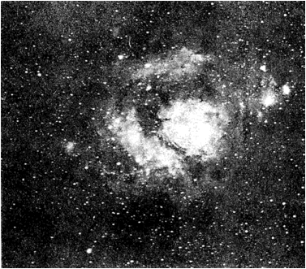
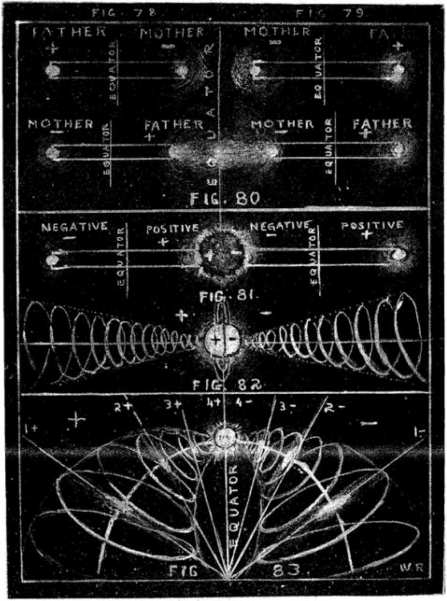
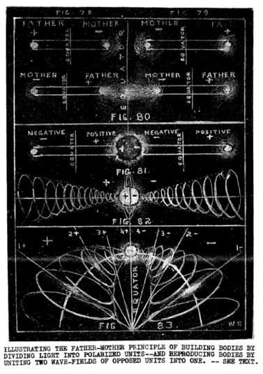
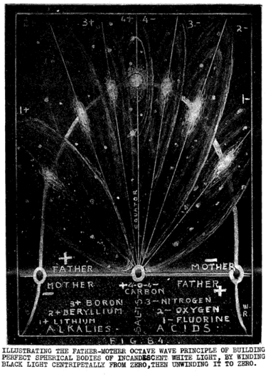
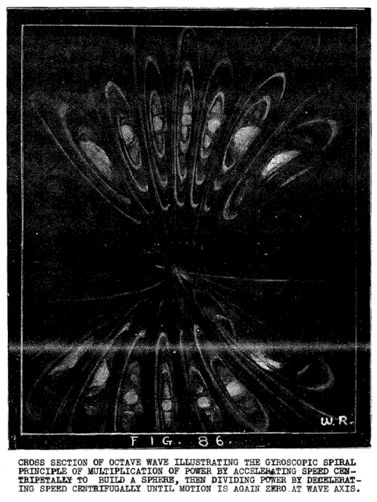
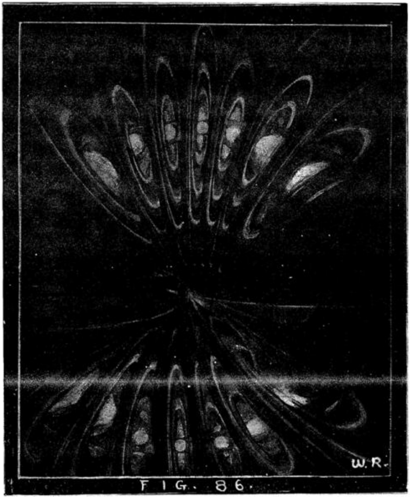

Lesson 39: Multiplication into Transcendent Beings¶
The human race is slowly unfolding from a primitive, physical existence to a divine spiritual one. The stages of our unfolding begin with a limited range of body sensing, and end with an unlimited range of Mind-knowing.
Thousands of years are consumed in the process of making even a little progress from physical sensing to Mind-knowing. The process is one of slow multiplication for the sensed individual who has not yet heard the Inner Voice of Universal Mind urging him to communion with the Light of knowing Mind–but it multiplies very quickly for one whose Soul is awakened to a realization of the omnipotence and omniscience of all mankind.
If you have heard your awakened Soul whispering inspired knowledge intuitively to you it but marks a point in your unfolding which has taken you millions of years to reach. You can continue to unfold slowly for another thousand years with but little progress or you can gain a thousand years of progress in a few months–or weeks–or even in a timeless flash–if you will so live your life that you do not yourself smother that Voice of Inner Awakening as the great mass of humans are perpetually doing who prefer to listen to the noises which vibrate their senses rather than to the silence of their all-knowing Souls–which are STILL–and without vibration.
These lessons are for the purpose of giving you the knowledge of how to transcend your Self by multiplying your Self.
By gaining the comprehension which will enable you to increase the range of your now very limited sense perception to a very great range.
By a great increase in what is known as extra-sensory perception. The great mass of the human race has, as yet, but learned to think in the positive direction of concentration. Only a few can balance their concentrative thinking with decentrative thinking, –and a more rare few can control their thinking from the still center from which the pendulum of their thinking swings two ways between the positive and negative halves of their bodies. Every gain in knowledge in this direction increases the range of sense perception.
By the multiplying power of balanced mating, which means the unifying principle that voids the unbalance of divided sex condition. Knowledge of the electric nature of the two opposites which male and female are, will avoid the great ills which arise from pure ignorance of this relation.
By gaining the power to acquire knowledge from the invisible CAUSE of all things without needing to be informed by the senses. To attain this end is to attain all there is to attain. He who desires to attain it may do so by fulfilling the requirements for fulfilling that desire.
ALL KNOWLEDGE EXISTS. KNOWLEDGE BELONGS TO THE MIND UNIVERSE. HE WHO DESIRES ALL-KNOWLEDGE MAY ATTAIN IT ONLY BY TRANSCENDING THE SENSED MATERIAL UNIVERSE.
The CONSCIOUSNESS of man must transcend the sensed electric body of man. When CONSCIOUSNESS awakens in man it controls the body in the measure of its awakening. Until that time man thinks of his body as his self. When man sits within his body and knowingly controls it, as he sits within his car and controls it, he then knows his body as but an instrument for his Self expression.
When he, is thus aware of the Light which his Consciousness is he has transcended his senses. The greater his knowledge the more he multiplies himself.
Likewise, the more transcendent he becomes MENTALLY, the greater he increases his range of physical perception beyond the now very limited range. In other words, the more he can think negatively out from his body into the immensity of recorded thoughts in the wave-fields of space, the more he will gain telepathic powers of thought transference between the living present and the still living past Beings of earth.
When you have attained that center of Light which is the fulcrum of YOUR thinking you have then also become the fulcrum of timeless WORLD thinking, for all thoughts extend from that which you have BECOME.
This is YOUR goal. It is the ultimate goal of all mankind.
The rest of these lessons, from now on, will concentrate upon illumining your path to this goal. To do this we must give you thorough knowledge of the mechanical processes by means of which this divided electric universe builds positive and negative thought-bodies for the sole purpose of manifesting IDEA of MIND in thought forms.
That is all this universe of motion and matter is. It is but a cosmic cinema of THOUGHT FORMS–THOUGHT IMAGES of MIND IMAGININGS.
From now on we will concentrate upon clarifying this statement to you in words which are much exemplified by diagrams.
THOUGHT MECHANICS¶
We again refer to the UNDIVIDED Mind universe of IDEA as symbolized in Fig. 8, on page 149, and the DIVIDED thought universe, as exemplified in Fig. 9 on same page.
The IDEA of Creation is ONE–but the expression of Idea is seemingly many.
The many thought forms are extended from the ONE Mind. They are but seemingly separate and separable for only one reason. That reason is because they are in motion–opposed motion in two opposite directions which cause two opposite effects.
IF ALL MOTION SUDDENLY CEASED THE UNIVERSE WOULD BE WITHOUT FORM AND VOID. IT WOULD THEN BE ONE WITHOUT THE ILLUSION OF SEPARATENESS.
f. 0356 · p. 356Our purpose now is to explain the mechanics of the illusion which makes it possible for the ONE to SEEM to be many.
The secret of it lies in the desire of Mind to THINK its One Idea of Creation into the many thought forms of that ONE IDEA. To THINK means to extend MOTION from STILLNESS–and the motion thus extended must become still. It must then again become motion in order to return to the point of stillness from which it sprang.
In more simple words, thought springs from REST at zero, seeks a point of REST, and returns to REST at zero. Every action in Nature is the result of desire to express action. Likewise, every action of every nature expresses its desire by extending from zero radially OUTWARD, to seek zero–and it then returns radially INWARD to again seek rest at a point of zero motion. No action in Nature, no matter how great or small varies this one principle of mechanics of motion.
This one mechanical principle of desire for expression, followed by its equal reaction, is the pulse beat–or outward-inward breath of this living universe.
We are overwhelmed by the SIZE and COMPLEXITY of this universe. We will try to simplify this complexity by some simple analogies.
A SIMPLE ANALOGY¶
No. 1. If you look out into the night sky you will see myriads of bright stars. They all seem to be motionless, even though they are moving thousands of miles each minute. They have been there millions of years and will still be there more millions of years. See Fig. 72.
Now suppose you looked out one night and saw those stars coming and going, appearing suddenly as a bright light and then immediately disappearing into the dark. Instead of a duration of billions of years they were visible for only a small fraction of a second as light emerging from the DARK.
Then suppose you suddenly realized that you were not looking at stars at all, but were looking at fireflies flashing in the meadow. If, in your imagination you could look at the stars that way, as but transcient explosions, you would have a better idea of the cosmos as a whole. See Fig, 73.
The light from the firefly is an expression of desire extended all around that point of desire. So, likewise, is a sun, or planet–or tree–or insect–or atom of silicon.
EVERY CREATIVE ACTION IS AN OUTWARD-INWARD EXPLOSION¶
No. 2. Now let us look at all Nature as though the desire to express idea is manifested by an outer explosion followed by an inner explosion. Do not consider an explosion from the time basis. Consider an explosion of gunpowder, of a sun, a man, a violet or an oak tree as the same in principle but differing only in time. A dynamite explosion may take but a few seconds for both the outward action and the inward reaction–a sun billions of years–an oak tree a hundred years or a violet but a few days, but each is the same effect, See Fig. 74.
POSTULATE¶
f. 0357 · p. 357Now apply the above to PURPOSE–God’s purpose. The outward extension from a point of desire anywhere in God’s Cosmos, is the action of GIVING.
GIVING outward from a point means to radiate, for the desire to give extends RADIALLY in all directions.
AXIOM¶
That outward thrust of electric force which science calls RADIATION is the MOTHER principle of Creation. The cosmic meaning of RADIATION is to GIVE. Its creative principle is to UNFOLD THOUGHT FORMS from the seed to record as negative thought-bodies in space.
POSTULATE¶
The outward explosion of radiation leaves a vacuum behind it which must be refilled, and an equator of compression ahead of it which must be relieved.
The inward reaction to the outward action pulls inward explosively toward the same point of desire which caused the outward action.
The reaction to GIVING is REGIVING. This is inviolate LAW.
REGIVING inward TOWARD a point means to gravitate, for the regiving extends RADIALLY toward a center of gravity. See Fig. 16, page 165.
AXIOM¶
The inward pull of electric force which science calls GRAVITATION is the FATHER principle of Creation. The cosmic meaning of GRAVITATION is to be REGIVEN equally for that which is GIVEN. Its creative principle is to REFOLD THOUGHT FORMS toward the seed to record as positive thought-bodies in matter.
ANOTHER SIMPLE ANALOGY¶
No. 3. We have stated that every unit of Creation is an extension of every other unit. Also we have stated that each unit is indissolubly bound to every other unit–and that each is constantly interchanging with every other unit. Hence the ONENESS, and the INTERDEPENDENCE of every unit of Creation upon every other unit.
A simple diagram will clarify this idea. See Fig. 75.
f. 0358 · p. 358
Archival Plate (image059.gif)¶

This drawing represents two suns in space. We have made them similar in mass so their wave-fields will be equal.
These suns have been compressed into their abundance by the multiplication of light given to them. They MUST radiate a part of that abundance. They cannot help it. They cannot withhold their abundance as humans do. If they could withhold it they would wither as humans do who withhold of their givings.
Each of these two suns give to each other by radiating their gift outward into space. Between each unit of Creation and every other unit there is a plane of equal pressures where whatever is RADIATED by each unit reverses its direction at that equator and then GRAVITATES toward every other unit in Creation.
Fig. 75, which illustrates balanced interchange between two suns, and Fig. 76, which illustrates balanced interchange between a man and woman, and Fig. 77, which illustrates balanced interchange between the opposite poles of a bar magnet represent two polarized units in space. Each of these units RADIATES its light OUTWARDLY into space. Each regives that which space gave to it in abundance.
f. 0360 · p. 360Each sun is presumably, giving to the other, each human is presumably giving to another and one pole of a magnet is likewise presumed to be giving to the other. That is a fact–but beyond that interchange between just TWO units is the greater fact that each is giving to every other unit in space.
This greater fact is the one which escapes the observation of man This fact needs the greater attention of mankind because our peace and happiness is measured by our knowledge of this great universal fact that we cannot give to anyone individually without giving to the whole human race, nor, conversely, can we hurt one human without hurting the whole human race.
The sun cannot restrict its radiation to one sun–nor can man restrict his radiation to one man. All units of Creation radiate out into all space. All units are extensions of each other. Each unit of Creation interchanges its very breathing with every other unit.
Each unit increases the abundance of every other unit by reversing the expansion of its radiation to the contraction of gravitation. Carefully study the arrows in Figures 75, 76 and 77. Note that radiation reverses its direction at every equator which divides every unit of Creation from every other unit.
Note carefully that every radiating line is reversed to a gravitating one at the equator.
Make it a part of your Consciousness and your knowing, that every creating unit in the entire universe is an extension of every other unit. That being factually so every action by anybody anywhere affects everybody by its reaction everywhere.
Make it a part of your Consciousness that you cannot extend a gift to any individual anywhere without extending it everywhere. If you give your son a thousand dollars it immediately begins to be extended throughout the whole human race. Even though he locks it in a steel safe it will eventually become unfrozen and radiate its light to all humanity.
Make it a part of your Consciousness, also, that all we are dealing with in this universe is the Light of Love which cannot be bound, nor limited. Just as you cannot prevent the sound of your voice reaching around the earth seven times per second so, also, you cannot prevent any thought or action of yours from impacting every human on the planet.
f. 0361 · p. 361


Archival Plate (image061.gif)¶

Fix also into your Consciousness that your eternal Soul is but a centering point in the universal Consciousness and the limits of desire extending from your Soul are those of the universe itself.
f. 0363 · p. 363Fix also into your KNOWING that you are both father and mother–for you radiate Light and Light gravitates to you. You are a focal center of a spiral vortex–a center of gravity–toward whom the universe MUST give of ITS abundance to maintain YOUR abundance.
When you have learned the greatest of lessons –which is how to GIVE–you will increase your abundance in the measure of your ability to GIVE WITH LOVE WITHOUT ANY OTHER MOTIVE THAN GIVING LOVE.
When you have learned that fact you will have learned that you are equally anode and cathode–equally radiative and gravitative–a balanced Mind controlling a balanced body.
And as you learn this fact by practicing it you will feel your power growing–your mental stature multiplying and your state of Mind reflecting the ecstasy of your KNOWING God in you as ONE.
NEW KNOWLEDGE CONCERNING THE BUILDING OF BODIES¶
It is time that many misconceptions concerning the structure of matter, which have been arrived at from observations of the senses, must be corrected.
One of these is the assumption that the earth is a huge magnet. This theory is commonly taught as a fact of matter and motion. It must be corrected because it is so fundamentally untrue that it would obstruct further knowledge of the structure of matter just as a huge boulder would obstruct the passage of a railroad train.
This theory was arrived at because the earth has north and south magnetic poles, and so has a magnet. Look at Fig. 77 and you will see a polarized bar of steel which we call a bar magnet. If you try to pick up a nail with the magnet you will find that you can do so at the two poles which are gravitative-radiative centers.
You will find that the equator of the magnet is absolutely “dead”, so far as any indication of a gravitative inward pull, or a radiative outward thrust are concerned.
On the contrary everything which is affected by the earth’s gravity is pulled inward toward the center of the earth’s equator –not toward its poles–and everything also which is thrust away from the earth is thrust radially away from its center of radiation which is also the earth’s center of gravity.
The earth is not, therefore, a huge magnet. It is a body being formed into a sphere from zero form, and back again to zero, between the north pole of one electric wave (which a magnet is) and the south pole of another electric wave. You will see this in the diagram on page 522, Fig. 70. You will see there six waves–which are Nature’s magnets–and between the positive and negative ends of each a perfect sphere is born.
In Fig, 80 you will see the positive and negative ends of two bar magnets interchanging their balance in a desire for unity of two wave-fields into ONE–and two gravitative-radiative centers into ONE. That is what marriage means–the union of two wave-fields, and two centers of gravity into ONE.
f. 0364 · p. 364
Archival Plate (image063.gif)¶



If you place some iron filings between two bar magnets you will find that they quickly form a sphere. If you approach that sphere with a needle you will find that the needle points toward the center of the sphere, whereas it would point toward either pole of the magnet if the iron filings were removed. By studying Fig. 71 on page 523, and Fig. 80 together you will more readily understand why the earth is not ONE magnet but is the uniting of two halves of two magnets.
In Fig. 78 the negative pole of a magnet is shown in proximity to the negative pole of another one–Fig. 79–but you see no tendency there of a desire of the light of either one to unite their equators and gravitative-radiative centers into ONE. On the contrary you will note the tendency of their light to repel union with each other.
Nature does not reproduce bodies by uniting mothers with mothers–or fathers with fathers. By an intensive study of all of these diagrams you will better comprehend the law of balanced mating and the import of it.
Balanced mating not only reproduces perfect PHYSICAL BODIES but multiplies mental power to create THOUGHT BODIES, by uniting two separate wave-fields into ONE. By so doing two opposed unbalanced conditions become ONE BALANCED CONDITION, both physically and mentally.
The very intent of Creation is based upon balanced mating. Without it continuity would cease–which means that Creation would cease. We urge upon you to give deep study to this fundamental principle of Creation in order that you can intelligently multiply your power through balanced mating.
It is better to not mate than to mate with unbalanced opposites, for each unit of Creation is both father and mother. Each is like a polarized magnet, as shown in Fig. 71. Each is complete in itself. Each has a positive and negative body and the power to concentrate and decentrate mentally. Mental interchange between positive and negative thought-bodies by balancing the two, is the only method of preventing a distracting unbalanced physical condition because of living too much in one’s positive body and too little in its negative counterpart. An exalted mental state can entirely sublimate a physical unbalanced state if sufficiently assisted by joyous physical action.
To anyone whose life and environment makes balanced mating impossible we say to you, live joyously, exaltedly, ecstatically in the zero universe of Mind-knowing. You can transcend your positively sensed body by decentration within the sense range of your negative body.
Man is a spiritual Being. He need not necessarily live within his positive sense range. Deep meditation to find perfect attunement with Nature will make it possible for anyone to rely upon his own polarity and his own wave-field for a unified existence, and be freed from reliance upon the necessity of finding unity by extension of polarity.
ALL MATTER IS LIGHT AND IS MANIFESTED BY SPIRAL LIGHT-WAVES¶
There has been much controversy in science as to the nature of light. For a long time light has been presumed to be corpuscular, which means that it is composed of particles of matter. In recent years light has been said to be made up of waves. Both are right. All motion in the universe is wave motion. Matter is a corpuscular record of the electric potential at any one point in any wave. Particles of matter form wherever desire of Mind to express form takes place–and that is everywhere.
f. 0367 · p. 367There is no point in the universe which is not continually extending and retracting in inward-outward explosions to multiply the black light of space into the white light of incandescent matter and to divide the white light to return it to the zero from which it came. Every particle of matter is a wave and every wave is completely filled with particles of matter which measure the electric potential at every point in every wave-field.
Figure 82 illustrates how the electric current multiplies the zero of the universal equilibrium by winding low electric potential spirally into high potential, and then unwinding it to zero for repetition in the next wave cycle.
The central sun in this electric cycle occupies a position in the electric current which is known to electricians as a loop of force. Wherever an electric current passes through a wire these whirling loops of force occur to form microscopic atomic systems which are identical with a solar system, a nebula or a galaxy like the Milky Way. This little sun in Fig. 82 is a true sphere and the orbits of all of its microscopic atoms revolve upon the plane of its equator.
The same little sun is shown in Fig. 83 at the amplitude of a wave. By studying this diagram, in connection with Figures 84, 85 and 86, you may see the whole process of winding light gyroscopically, and spirally into spheres IN FOUR EFFORTS–then unwinding these spheres by four opposite efforts.
Spheres occur only at wave amplitudes and the fact of its four positive and four negative efforts is the basis of the octave wave from which our spectrum, our octaves of the elements and our octaves of musical tones are derived.
This 0, 1, 2, 3, 4, 4, 3, 2, 1, 0 octave sequence constitutes the heart-beat of the universe. It is the basis of our musical rhythms, our chemistry, our mathematics, our symmetry of design of all animal, mineral and vegetable forms and of our color spectrum of light.
Within the octave light-waves of matter in motion lie all the secrets of Creation. To know the wave is to know God’s secrets and His processes.
The next lesson will expand this idea more fully, but we can go no further now until we clarify the wave-field principle itself. To do this we must make clear to you the principle of the cube wave -fields of space as we have made clear the centering physical bodies which have emerged from those wave-fields of space.
This mystery will be unfolded in lessons 41, 42, and 43, together with the secret of how positive and negative light turn inside-out and outside-in to radiate and gravitate light from zero to incandescence and back to zero.
In the meantime study these six pages of drawings carefully, for in them is the basis of all the arts and sciences of man.